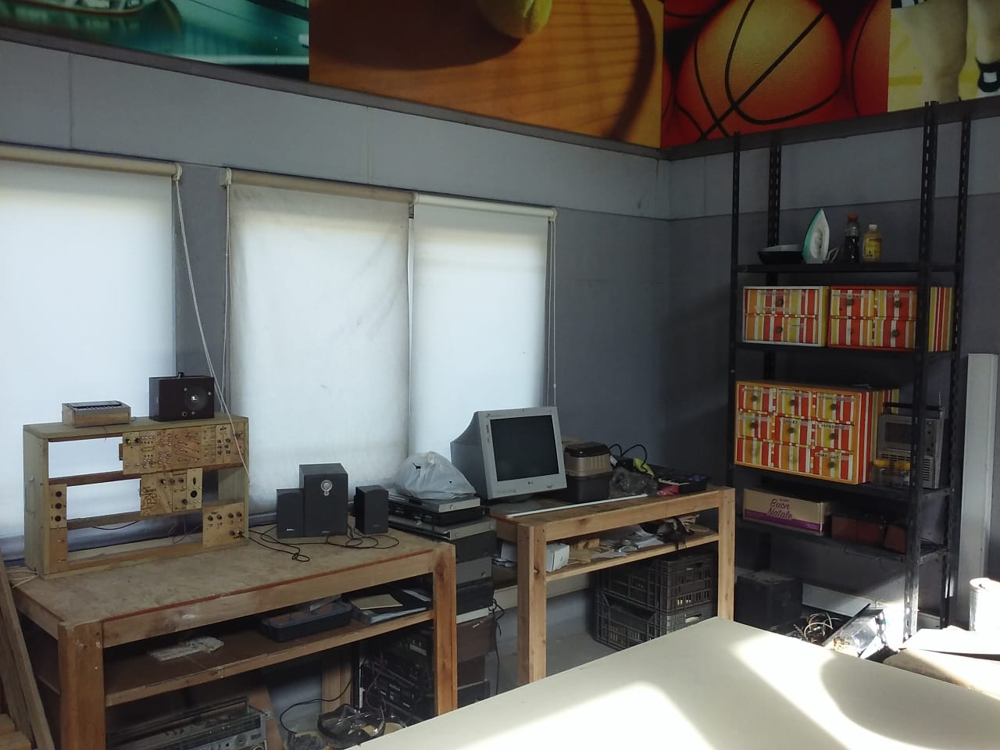

El taller
En el taller laboratorio de música electrónica se compone, interpreta y experimenta y también se construyen y/o modifican instrumentos musicales.

El taller funciona en en Casa Caracol desde el 2020 (en ese entonces se llamaba taller de luthería electrónica) como un experimento en el cual se construían pequeños teclados hechos con pulsadores y que fue mutando en sus objetivos y en su forma de hacer las cosas hasta en día de hoy.